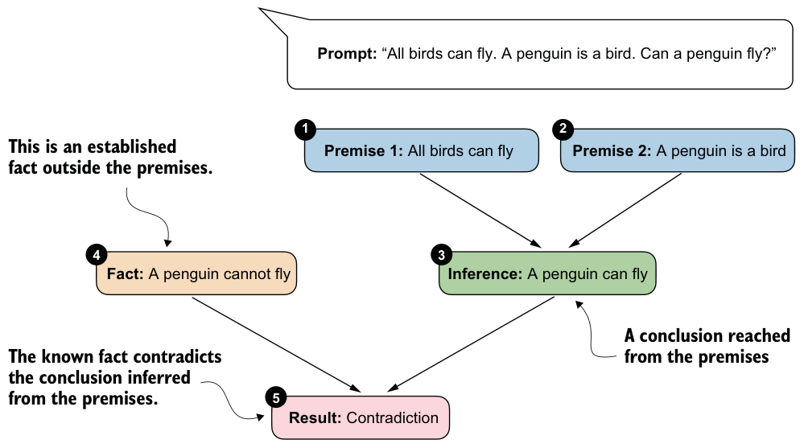
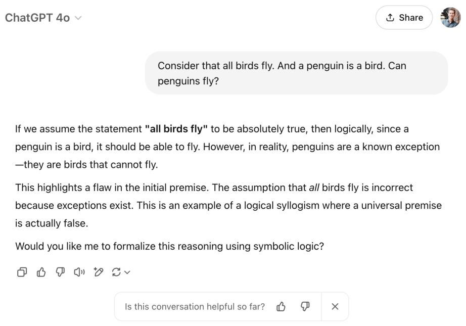

1.4Pattern matching vs. logical reasoning
During pretraining, LLMs are exposed to vast quantities of text and learn to predict the next token by identifying and reproducing statistical associations in that data. This process enables them to generate fluent and coherent text, but it is fundamentally based on learned statistical regularities rather than explicit rules or guaranteed logical inference.
LLMs respond to prompts by generating text continuations that are statistically consistent with the patterns seen during training. This includes many premise-to-conclusion patterns that can look like logical inference. The key difference is that the model does not explicitly represent premises and apply formal rules but instead predicts likely continuations from similar examples in its training data.
Consider the following example:
An LLM producing the answer “Berlin” is not logically deducing the answer. Instead, it is recalling a strong statistical association learned from training data. This behavior reflects what we refer to as pattern matching, which means that the model completes text based on learned correlations and not by applying structured reasoning steps.
But what about tasks that go beyond pattern recognition, tasks where a correct answer depends on drawing conclusions from given facts? This brings us to a different kind of capability: logical reasoning.
Logical reasoning involves systematically coming up with conclusions using rules. Unlike pattern matching, it depends on intermediate reasoning steps and the ability to recognize contradictions or draw implications based on formal relationships.
Consider the following prompt as an example:
There are two ways to evaluate this.
First, in a closed-world (prompt-only) setting, given the two premises (claims or assumptions) in the prompt, the valid answer is “Yes, a penguin can fly.”
Second, in an open-world (with background knowledge) setting, if we allow knowledge not included in the prompt (such as that penguins cannot fly), this external fact conflicts with the conclusion derived from the premises, as shown in figure 1.6. A reasoning system should notice the inconsistency and either ask for clarification or weaken the first statement (for example, “Most birds can fly, with exceptions such as penguins.”).
In contrast, a statistical (pattern-matching) LLM does not explicitly track contradictions but instead predicts based on learned text distributions. For instance, if information such as “All birds can fly” is strongly reinforced in the training data, the model may confidently answer, “Yes, penguins can fly.”

In the next section, we’ll look at an example of how an LLM handles this “All birds can fly...” prompt.
Logical reasoning and rule-based systems
1.5Simulating reasoning without explicit rules
We saw how contradictory premises can lead to logical inconsistencies. A conventional
LLM does not explicitly track contradictions but generates responses based on learned text distributions.
Figure 1.7 shows how a non-reasoning-enhanced LLM like GPT-4o in OpenAI’s
ChatGPT responds to the “All birds can fly...” prompt discussed in the previous section.
As you can see, GPT-4o appears to answer correctly even though it is not considered a reasoning model (unlike OpenAI’s other offerings, such as o1, o3, o4-mini, and the more recent GPT-5, which have been explicitly developed with reasoning methodology).

So how did the 4o model generate its answer? Does this mean GPT-4o explicitly reasons logically? No, not necessarily. At a minimum, GPT-4o is highly effective at simulating logical reasoning in familiar contexts.
GPT-4o does not implement explicit contradiction checking; it instead generates answers based on probability-weighted patterns. This approach works well enough if the training data includes many instances that correct the contradiction (for example, text like “penguins cannot fly”) so that the model learns a statistical association between “penguins” and “not flying.” In other words, the model recognizes the contradiction implicitly because it has frequently encountered this exact reasoning scenario during training. This effect relies heavily on statistical associations built from extensive exposure to reasoning-like patterns in training data. So, even when a conventional LLM seems to perform logical deduction, as shown in figure 1.7, it’s not executing explicit, rule-based logic but instead leveraging patterns from its vast training data.
Still, GPT-4o’s success here is a good illustration of how powerful implicit pattern matching can become when trained at a massive scale. These pattern-based reasoning models usually struggle in a couple of scenarios:
- When the logical scenario is novel (not previously encountered in training data) When reasoning complexity is high, involving intricate, multistep logical relationships
Logical reasoning vs. reasoning models currently available today
We might say that LLMs simulate logical reasoning through learned patterns. We can improve this further with specific reasoning methods, including inference-compute scaling and post-training strategies such as reinforcement learning, but the LLMs are not explicitly executing any rule-based logic internally.
Moreover, LLMs exist on a spectrum. Even before the advent of dedicated reasoning models such as OpenAI’s o1 and DeepSeek-R1, LLMs were capable of simulating reasoning behavior. These models exhibited behaviors aligning with the chapter’s earlier definition of reasoning in section 1.1, namely, generating intermediate steps before producing a final answer. What we now explicitly label a “reasoning model” is essentially a more refined version of this capability. These improved reasoning capabilities are achieved by using specific inference-compute scaling techniques (discussed in chapters 4 and 5) and targeted post-training methods, such as reinforcement learning (chapters 6 and 7), designed to improve and reinforce reasoning-like behavior.